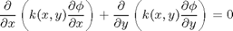
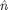
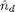
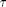
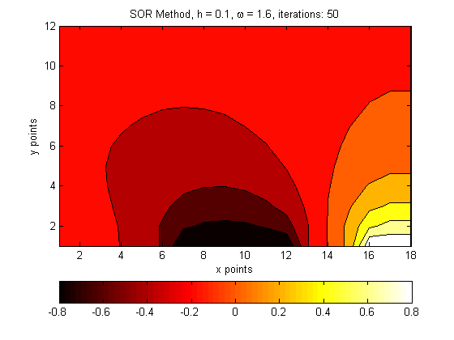

Contents
Escalar Poisson Equation
Routine for solving a PNP-MOSFET junction for the region:
%__________________________ %|++++| ---N--- |++++| %|+P++| |+P++| %|++++| |++++| %|____| |____| %| | %| | %| | %|________________________|
Governing equation

Where:
 is the number density of a doped region at time t,  is the initial number density of the doped regions and  is a constant.
clear, clc, %close all;
IC's
omega = 1.6; delta = 0.1; tau = 1.0; L = 1.8; dx = delta; x = 1:dx:L; n = 18; H = 1.2; dy = delta; y = 1:dy:H; m = 12;
Grid
n_d = ones(m,n); % initial doping value for silicon n_d(1:m/4, 1:n/6 ) = 3; % initial doping value for gate 1 n_d(1:m/4, 5*n/6+1:n) = 3; % initial doping value for gate 2 phi = zeros(m,n); % Electric potential grid (our goal) phi_tilde = zeros(m,n); phi_next = zeros(m,n); % Arrays for SOR % x gates locations: x_g1 = 1:n/6; x_gc = 2*n/6+1:4*n/6; x_g2 = 5*n/6+1:n; % x silicon location at the surface x_s1 = 1*n/6+1:2*n/6; x_s2 = 4*n/6+1:5*n/6;
Computing k(x,y) on the grid:
k = ones(m,n); % Assuming all k values constants
BC's
bolean mask for gates locations
x_gates = zeros(1,n); x_gates(x_g1) = 1; x_gates(x_gc) = 1; x_gates(x_g2) = 1; % Dirichlet: phi(1,x_g1) = 0.0; % gate 1 phi(1,x_gc) = -0.8; % central gate phi(1,x_g2) = 1.0; % gate 2 % Neumann BC: Every where else! % we know this boundary values of next 'tilde' step from the begining phi_tilde(1,x_g1) = 0.0; % gate 1 phi_tilde(1,x_gc) = -0.8; % central gate phi_tilde(1,x_g2) = 1.0; % gate 2
Main Loop
A = zeros(m,n); B = zeros(m,n); C = zeros(m,n); D = zeros(m,n); % r = 0.0001; iter = 0; r_iter = 1; % while r_iter >= r for s=1:50 %SOR: Computing phi_tilde loop: for i=2:m-1 for j=2:n-1 % Update the change in k varaible A(i,j)=k(i,j)+k(i+1,j); B(i,j)=k(i,j)+k(i,j+1); C(i,j)=k(i,j)+k(i-1,j); D(i,j)=k(i,j)+k(i,j-1); if j == 2 % Matrix's left column, Neumann BC phi_tilde(i,j)=... 1/(k(i+1,j)+k(i-1,j)+3*k(i,j)+k(i,j+1))*(... A(i,j)*phi(i+1,j)+... B(i,j)*phi(i,j+1)+... C(i,j)*phi_tilde(i-1,j)); elseif j == n-1 % Matrix's right column, Neumann BC phi_tilde(i,j)=... 1/(k(i+1,j)+k(i-1,j)+3*k(i,j)+k(i,j-1))*(... A(i,j)*phi(i+1,j)+... C(i,j)*phi_tilde(i-1,j)+... D(i,j)*phi_tilde(i,j-1)); elseif i == 2 && x_gates(j) == 0 % Matrix Upper row, for the regions with Neumann BC phi_tilde(i,j)=... 1/(k(i+1,j)+3*k(i,j)+k(i,j+1)+k(i,j-1))*(... A(i,j)*phi(i+1,j)+... B(i,j)*phi(i,j+1)+... D(i,j)*phi_tilde(i,j-1)); elseif i == m-1 % Matrix Lower row, Neumann BC phi_tilde(i,j)=... 1/(k(i-1,j)+3*k(i,j)+k(i,j+1)+k(i,j-1))*(... B(i,j)*phi(i,j+1)+... C(i,j)*phi_tilde(i-1,j)+... D(i,j)*phi_tilde(i,j-1)); else phi_tilde(i,j)=... 1/(k(i+1,j)+k(i-1,j)+4*k(i,j)+k(i,j+1)+k(i,j-1))*(... A(i,j)*phi(i+1,j)+... B(i,j)*phi(i,j+1)+... C(i,j)*phi_tilde(i-1,j)+... D(i,j)*phi_tilde(i,j-1)); end end end % Update Neumann BC's phi_tilde(2:m ,1 ) = phi_tilde(2:m , 2 ); % Left array column phi_tilde(2:m ,n ) = phi_tilde(2:m ,n-1 ); % Right array column phi_tilde(1, x_s1) = phi_tilde(2, x_s1 ); % Upper regions rwo array phi_tilde(1, x_s2) = phi_tilde(2, x_s2 ); phi_tilde(m,2:n-1) = phi_tilde(m-1,2:n-1); % Lower arraw row % SOR: compute phi next using realation constant: omega phi_next = phi + omega*( phi_tilde - phi ); r_iter = norm(phi_next-phi,2); phi = phi_next; %iter = iter+1; end %fprintf('iterations: %4.1f \n',iter);
Plot Figures
figure contourf(phi) title(['SOR Method, h = ',num2str(delta),', \omega = ',num2str(omega),', iterations: ',num2str(s)]) xlabel('x points') ylabel('y points') colormap hot colorbar('location','southoutside')